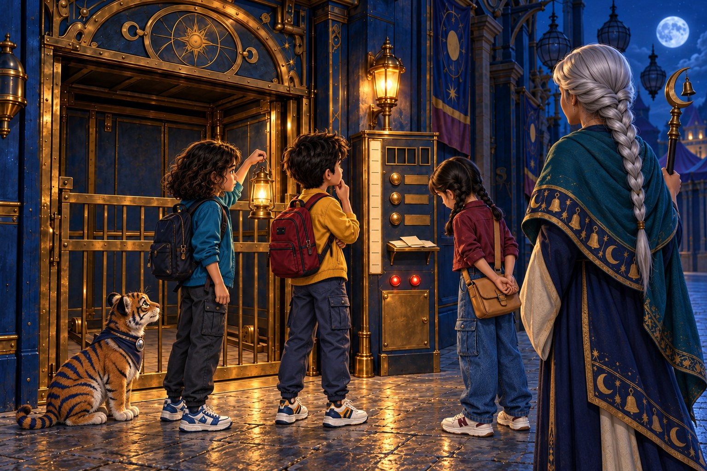
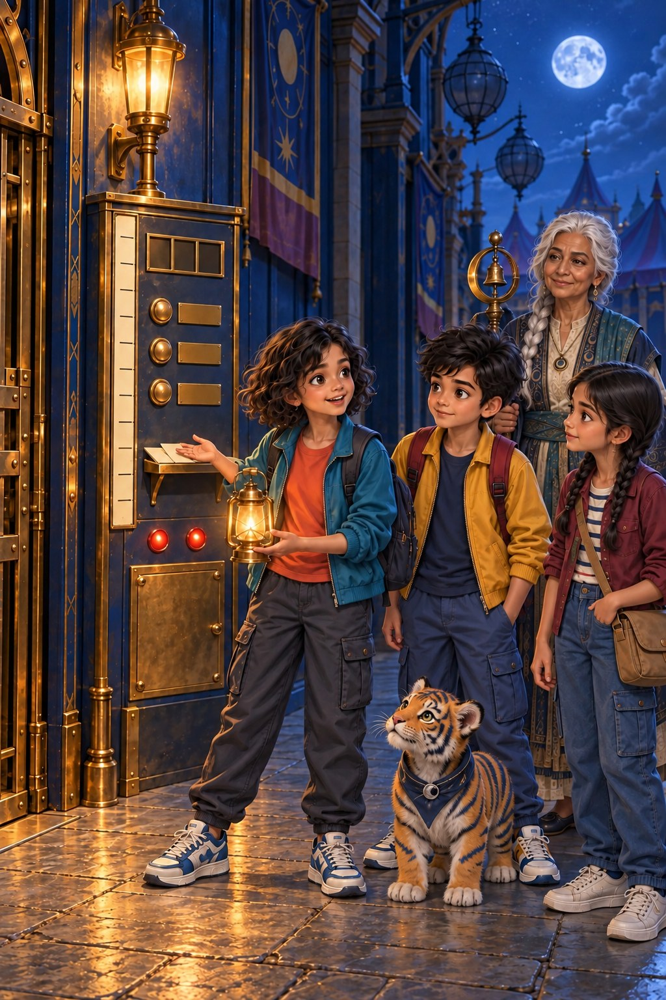

4
CHAPTER 01 · NUMBERS · PG 004

A small lift car stands behind a brass safety gate at street level. Next to it is a control box with a row of slots. Numbered cards fit into those slots. Each card tells the lift how far to move and in which direction.
The children can now see their first job. They must send the empty car down to the helper, let it load the supplies and bring it back.


Beside the shaft, a numbered strip shows the lift’s position. Street level is marked 0. Positive numbers are above it. Negative numbers are below. The store is at −8.
Vihaan follows the strip with his finger.
Eight marks
below the street.
below the street.
Yes.
The numbers tell us where
the lift is compared with
this landing.
the lift is compared with
this landing.
How can we choose
movements that
will reach the store?
movements that
will reach the store?